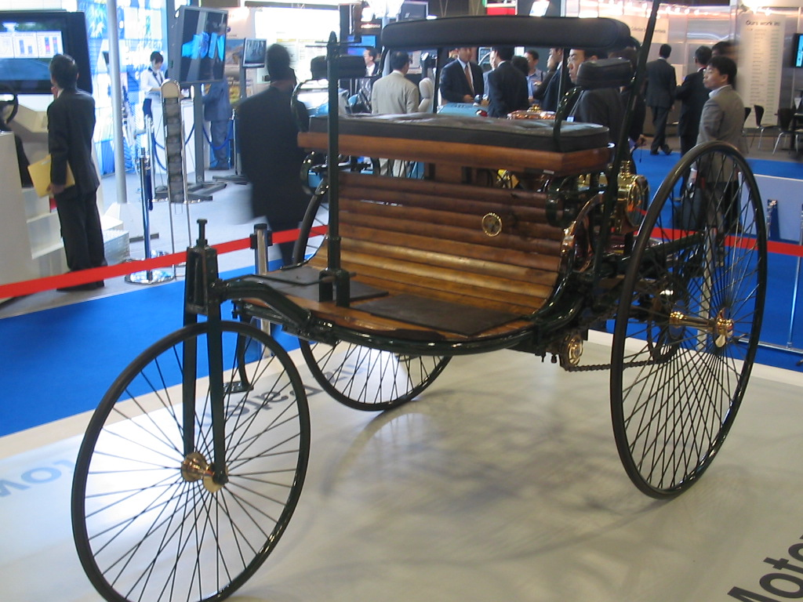
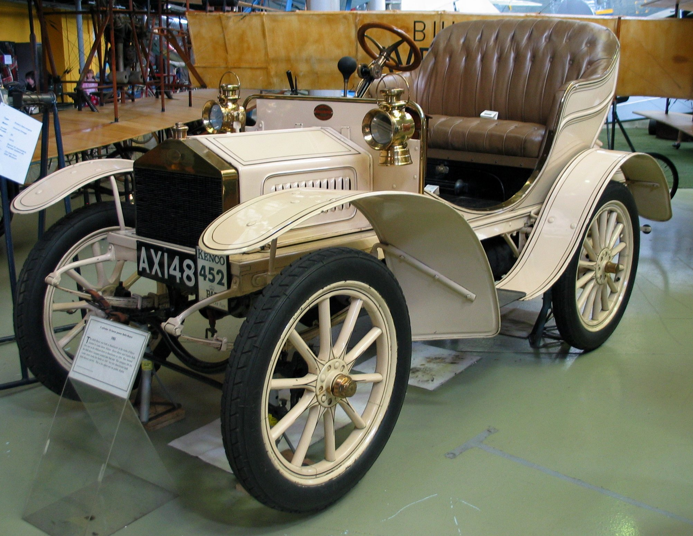
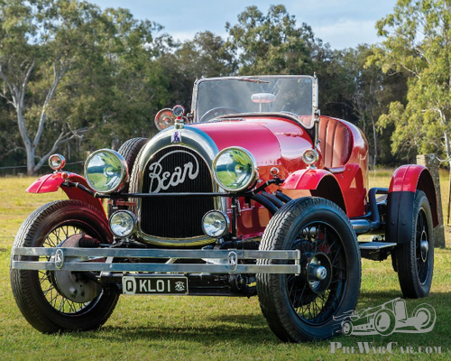
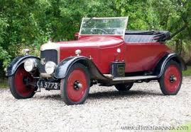
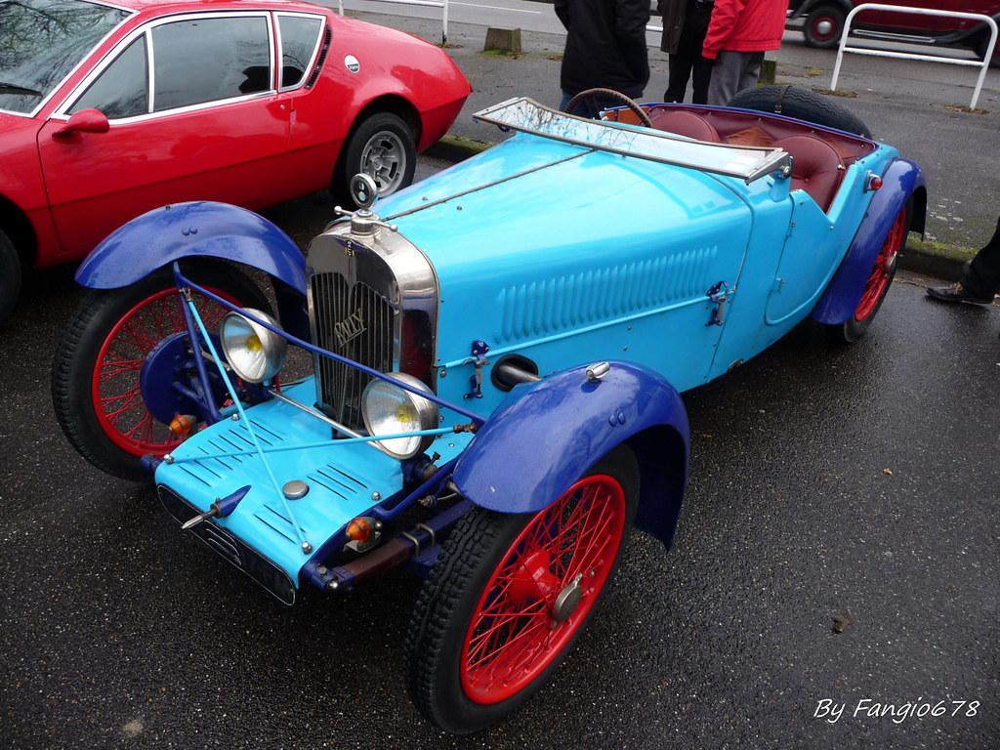
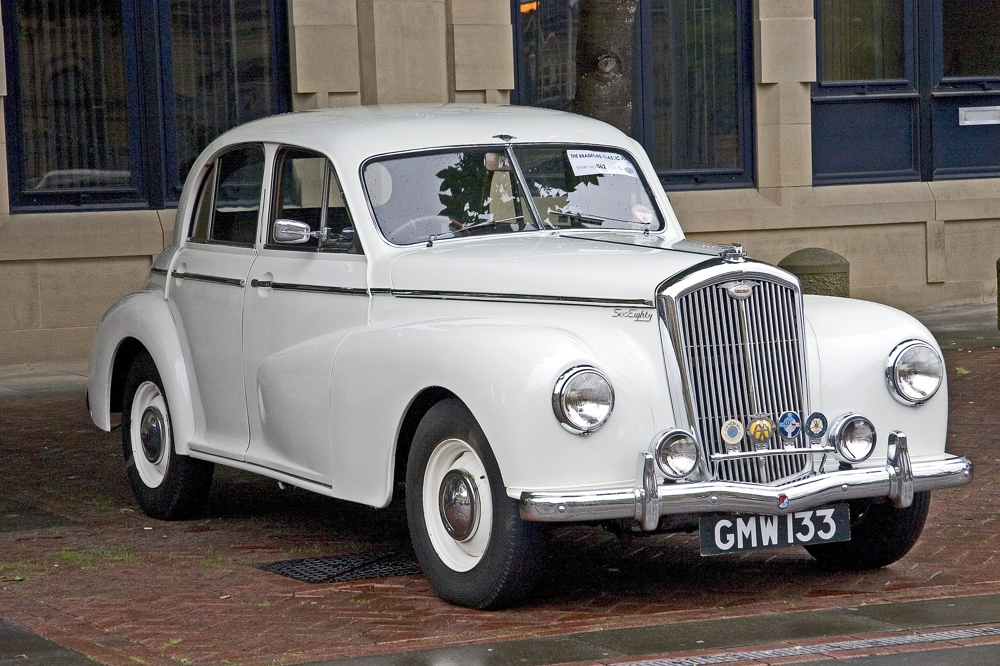
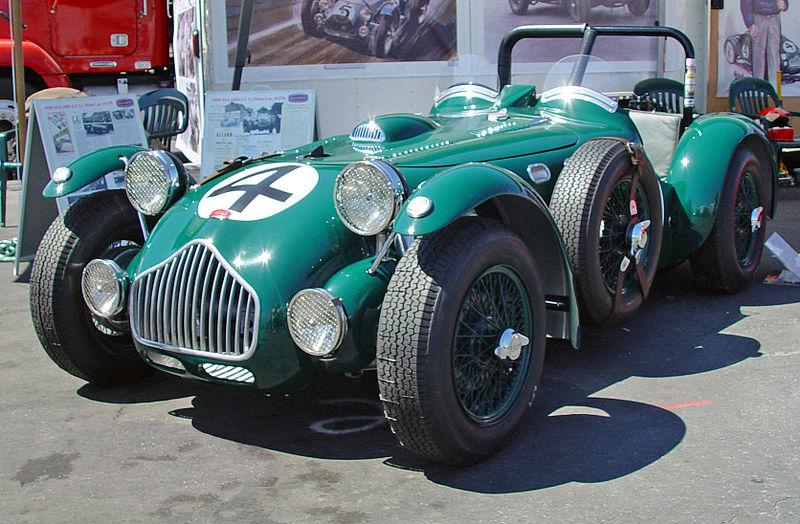
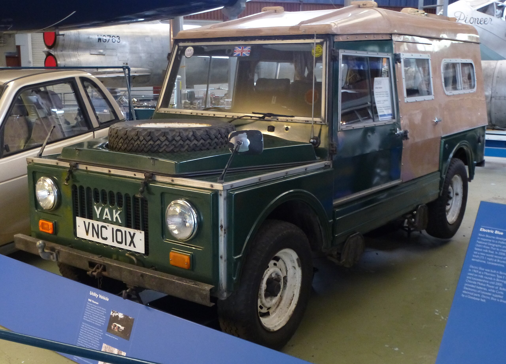

De evolutie van de auto in Europa
1885
eerste wagen in de veteraan
Van 1885 is er de eerste motor wagen van de veteraan de Patent Motorwagen van Benz & Cie
1904
Laaste wagen begonnen in de veteraan
Vanaf 1904 zou het laaste motorwagen van de veteraan uitkomen de Rolls-Royce. Deze wagen i ook de eerste Royce wagen gesteld met 3 andere.
1905
eerste wagen in de messing
DE Alcyon 7/8 zou het eerste messing moterwagen zijn vanaf 1905. De merk deed ook fietsen voor dat ze auto dede.
1918
laaste wagen in de messing
Dan komt de laaste wagen van de messing de AC 12 vanaf 1918 het is een afkorting voor autocarrier of bestel wagen.
1919
eerste wagen in de vintage
Het eerste motorwagen dat was gemaakt in 1919 was de grand-sports wagen van ABC. Er bestaat geen titel over de merk.
1930
laaste wagen in de vintage

Het TR 671 door Volvo was gemaakt in 1930. Het heeft een design dat is vergelijk baar met de Volvo PV56 9 jaren later.
1931
eerste wagen met diesel in de vooroorloogs

Het wagen komt van Alfa Romeo 8C en noemt de 8C 2300 gemaakt om 1931. Het was gemaakt met 8 cilinders.
1948
laaste wagen met diesel in de vooroorloogs
Het wagen is de Wolseley 6/80 van 1948. Het lijkt de exact zelfde als de Wolseley 4/50.
1949
eerste wagen in de naoorloogs klassieke
Het J2 X was door Allard in 1949 gemaakt. Er is geen extra informatie over deze wagen.
1979
eerste wagen in de naoorloogs klassieke
Het Yeoman was gemaakt met Ford Escort onderdelen in 1979 door Yak.